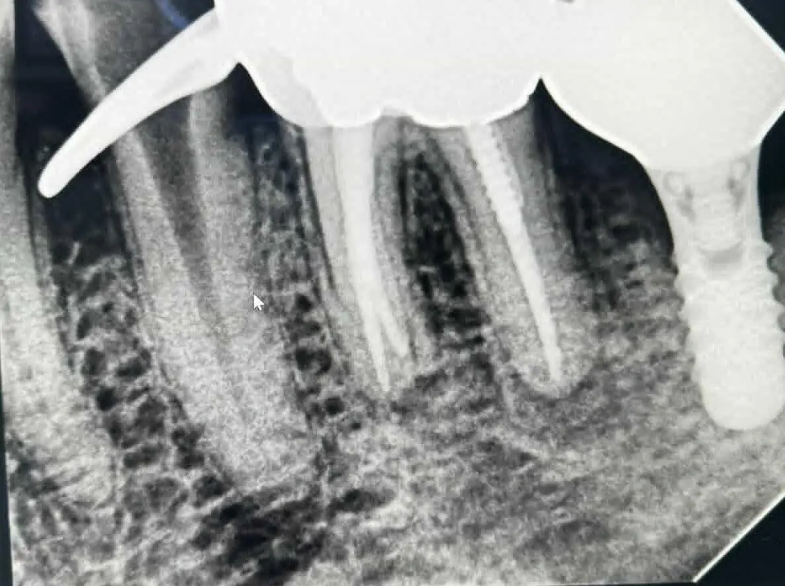

نسخه استخراجشده؛ ترجمه یا تأیید علمی انجام نشده است. وضعیت: captured
در رادیوگرافی یک پرمولر پایین پس از خارج کردن پین بزرگ، دیوارههای سرویکال نازک به نظر میرسند؛ این تصویر برای تصمیم نهایی کافی نیست.
رادیوگرافی بهتنهایی کافی نیست و معاینهی مستقیم لازم است. بحث این دندان کلیاتی برای زمان معاینه است؛ توصیهها بدون معاینه، تصمیم نهایی نیستند.
دیوارههای سرویکال ضخامت خود را از دست داده و نازک به نظر میرسند. نازکی دیوارهها مبنای احتیاط در انتخاب بازسازی است و باید هنگام معاینه ارزیابی شود.
عملاً فرول نداریم و تراش، دیوارههای نازک باقیمانده را کمتر میکند. در این وضعیت باید به سمت درمان ادهزیو رفت؛ کم کردن بیشتر دیوارههای نازک مطلوب نیست.

رستوریشن ادهزیو غیرمستقیم بهجای روکش کانونشنال. این جهتگیری مشروط به ارزیابی بالینی است و از رادیوگرافی به حکم قطعی تبدیل نمیشود.
کنترل حجم، استرس شیرینکیج و ساخت فرم و اکلوژن دشوارتر است. شیرینکیج این حجم، استرس زیادی به هیبرید لایر وارد میکند و کنترل فرم و کانتور هم دشوار است.